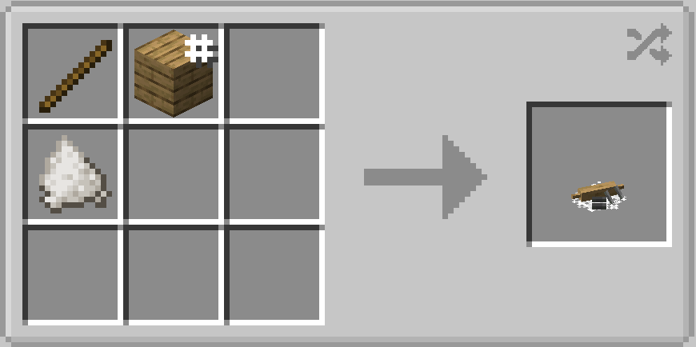
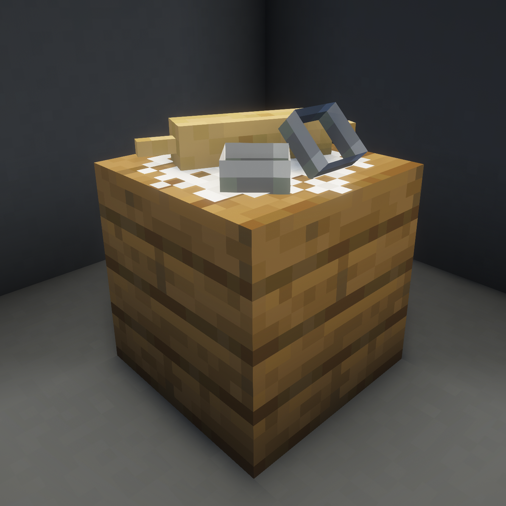
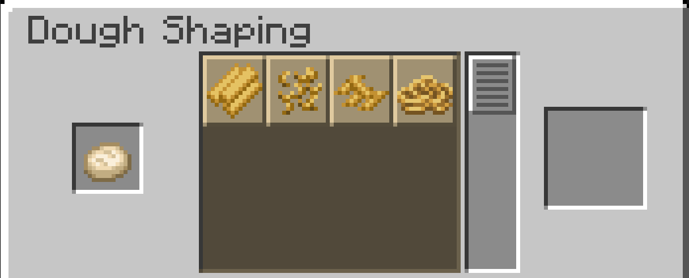

The Dough Shaping Station is for squashing doughs into... shapes!
It works like the Stonecutter - drop your dough into the input slot and select from the options. Works for sugar/gingerbread cookie dough, corn, and, believe it or not, plain ol' dough.

1.0

